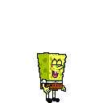

Lu9's MIDI World
 Welcome to my MIDI realm.
Video Games
SML2_Star_Maze_Lu9.mid
LI2_GBC_Island_Theme_Lu9.mid
LI2_TromSolo_Lu9.mid
NSMBWii_Starman_Lu9.mid
DDFP_Lakeside_Lu9.mid
Re-Volt_Frontend_Lu9.mid
SLJH_Main_Menu_Lu9.mid
SLJH_Stick_Em_Up_Lu9.mid (GS) (Updated!)
SLJH_Wash_Day_Lu9.mid (GS) (Updated!)
SLJH_10_Collected_Lu9.mid (GS) (Updated!)
BTB_Title_Screen_Lu9.mid
SLJH_Game_Over_Lu9.mid
NPB_Catdog_Menu_v2_Lu9.mid
SMB3_World_1_Lu9.mid
BTB_Level_Music_3_Lu9.mid
WTPAI100AW_Eeyores_Birthday_Lu9.mid
WTPAI100AW_Rabbits_Plan_Lu9.mid
SDW_Trip_WIP_Lu9.mid (Unfinished)
BTB_Level_Music_4_Lu9.mid
KH_Bounce-O-Rama_Lu9.mid
KH_Dearly_Beloved_Lu9.mid
KH_Gummi_Ship_World_Lu9.mid
KH_Shipmeisters_Humoresque_Lu9.mid
KH_Once_Upon_a_Time_Lu9.mid
BTB_Mission_Intro_1_Lu9.mid
BTB_Mission_Intro_2_Lu9.mid
BTB_Level_Music_2_Lu9.mid
BTB_Level_Music_5_Lu9.mid
TnJMH_Kitchen_Capers_Lu9.mid
SBSPTM_Management_Material_Lu9.mid
TS2_Challenge_Theme_Lu9.mid
TDB_Level_Clear_Lu9.mid
TSR_Andys_Room_Lu9.mid
SMW_Bonus_Level_Lu9.mid
KHHD15R_Dearly_Beloved_Lu9.mid
NR_Main_Menu_Lu9.mid
BTB_Job_Sheet_Lu9.mid
MF_Sirens_Lu9.mid
LI2_Whack_a_Snake_Lu9.mid
JN_Lab_Lu9.mid
SLJH_Ahoy_There_Lu9.mid (GS) (Updated!)
LifeOfGeorge_Music_WIP_Lu9.mid (Unfinished)
WTPAI100AW_The_Woods_Lu9.mid
WTPAI100AW_Board_Game_Lu9.mid
WTPAI100AW_Rabbits_Garden_Lu9.mid
LSR_Desert_Lu9.mid
StH2_Continue_Lu9.mid
TS2_Level_1_Lu9.mid
TS2_Main_Menu_Lu9.mid
TSR_Main_Menu_Lu9.mid
Sonic_Retro_Logo_Lu9.mid
TSR_Pizza_Planet_Lu9.mid (GS) (Updated!)
WTPAI100AW_Poohs_House_Lu9.mid
WTPAI100AW_Pooh_and_Honey_Lu9.mid
LSR_Artic_Lu9.mid
LR_Rocket_Racer_Run_Lu9.mid
TSR_Menu_GBC_Lu9.mid
StH3_Ice_Cap_Zone_Act_1_Lu9.mid
LR_Menu_Theme_GBC_Lu9.mid
SMW_Goal_Gate_Lu9.mid
SMA4_Bonus_Level_Lu9.mid
SMW_Starman_Lu9.mid
SLJH_Main_Menu_SM3DL_SW8_Remix_Lu9.mid
RCC_Beanstalk_Babies_Lu9.mid
LSR_GBC_Construction_Mode_Lu9.mid
RCC_Ali_Baby_and_the_40_Fleas_Lu9.mid
RCC_Passwords_Screen_Lu9.mid
RCC_Clock_Work_Babies_Lu9.mid
MnMsB_Mini-Game_Theme_Lu9.mid
RCC_Dessert_Island_Lu9.mid
CheetahII_Level_Theme_Lu9.mid
SMW_P_Switch_Lu9.mid
SLJH_Dear_Diary_Lu9.mid (GS) (Updated!)
TH6_UN_Owen_was_Her_Lu9.mid
DT_The_Moon_Lu9.mid
TatMG_New_York_Lu9.mid
MnMsMM_Title_Screen_Mario_Galaxy_Remix_Lu9.mid
SM3DW_Main_Theme_Lu9.mid
RCC_Snow_Problem_Lu9.mid
SMB2_Underground_Prototype_Lu9.mid
SMB3_Overworld_2_Rugrats_Remix_Lu9.mid
WTPAI100AW_Fishing_Game_Lu9.mid
MnMsB_Sweet_Dreams_Lu9.mid
LI2_GBC_Cards_Menu_Lu9.mid
TL_Mii_Apartments_Lu9.mid
TL_Happy_Lu9.mid
SLJH_Stage_Clear_Lu9.mid
SLJH_Title_Screen_Lu9.mid
TL_Quirky_Questions_Lu9.mid
TL_Reconciliation_Jingle_Lu9.mid
TSR_Intro_Lu9.mid
THH_Rabbit_Says_Lu9.mid
SBSPSS_Cavernous_Canyons_Lu9.mid
SBSPSS_Title_Lu9.mid
SBSPSS_Thermal_Tunnels_WIP_Lu9.mid (Unfinished)
SBSPSS_Lava_Fields_Lu9.mid
waster_envy.mid
SLJH_Make_It_Snappy_Lu9.mid
SSB4_Menu_(INCOMPLETE)_Lu9.mid (Unfinished)
EB_Bed_and_Breakfast_Lu9.mid
LEGO_VideoGame_Piano_Medley_Lu9.mid
M1_Pollyanna_Lu9.mid
JN_Downtown_Lu9.mid
JN_Area_51_Lu9.mid
JN_Neighborhood_Lu9.mid
SBSPSS_Man_Rays_Lair_WIP_Lu9.mid
TSR_Street_Racing_Lu9.mid
SBSPSS_Jelly_Fields_Lu9.mid
SBSPSS_Sandys_Tree_Dome_WIP_Lu9.mid
SMB_Underground_Mix_Lu9.mid
LR_Extra_Music_1_Lu9.mid
MnMsTLF_Stampin_and_Sortin_Lu9.mid
SM64_MnMsTLF_Starman_Stampin_and_Sortin_Remix_Lu9.mid
RedNGreen_Grassland_Custom_SMW.mid
THH_Map_Screen_Lu9.mid
TS2_Game_Over_Lu9.mid
SBSPSS_Options_Lu9.mid
LI2_Island_Theme_Lu9.mid
LSR_City_Lu9.mid
LSR_Final_Race_Lu9.mid
LI2_Brickster_Bots.mid (Conversion)
LI_The_Medical_Center_Lu9.mid
CS_Geothermal_Lu9.mid
LI2_Island_Walk_Lu9.mid
SL2_Minigame_Theme_Lu9.mid
UT_Spooktunes_Lu9.mid
UT_Bonetrousle_Lu9.mid
UT_Ruins_Lu9.mid
SMBDX_Main_Menu_Lu9.mid
UT_Wrong_Enemy_Lu9.mid
BTB_Level_Music_1_Lu9.mid
UT_Death_By_Glamour_Lu9.mid (Original by Le Ruse Bird)
WTPAI100AW_The_Flood_Lu9.mid
UT_Gasters_Theme_Lu9.mid
LTGBC_Stage_1_Lu9.mid
YKW_Spotted_Lu9.mid
Uwol_Title_Screen_Lu9.mid
NPB_Rugrats_Theme_Lu9.mid
SM64_Cave_Dungeon_Lu9.mid
NPB_Wild_Thornberrys_Theme_Lu9.mid
SMS_Delfino_Plaza_NPB_Thornberrys_Remix_Lu9.mid
SBSPSS_Fish_Hooks_Park_Lu9.mid
KH2_Bounce-O-Rama_Speed_Up_Version_Lu9.mid
OS_On_Little_Cat_Feet_Lu9.mid
PPGISotT_Board_1_Lu9.mid
RhythmTengoku_Night_Walk_Lu9.mid (GS)
UT_Its_Showtime_Lu9.mid (GS)
MnMsMM_The_Warehouse_Lu9.mid (GS)
TnJMA_The_Garden_Lu9.mid (GS)
SBSPSS_Industrial_Fields_Oil_Rig_Lu9.mid
SmurfsNES_The_Swamps_Lu9.mid (GS)
LTCA_Forest_Lu9.mid (GS)
UT_Spider_Dance_Lu9.mid (GS)
UT_Enemy_Approaching_Lu9.mid (GS)
UT_Meat_Factory_Lu9.mid (GS)
UT_Troubled_Dingle_Lu9.mid (GS)
UT_Happy_Town_Lu9.mid (GS)
LI_The_Jail_Lu9.mid (Original by The Unhappy Orchestra)
Luigo_Scroller_Lu9.mid (GS)
RCC_Sure_Would_Forest_Lu9.mid
SBSPSS_Road_To_Rock_Bottom_Lu9.mid
Ants_Afire_Music_(DNA_Productions)_Lu9.mid
WWR_Dirt_Stadium_Lu9.mid (GS)
WWR_Dirt_Stadium_GM_Version_Lu9.mid
LTCA_Woods_Lu9.mid (GS)
Gimmick_Good_Morning_Lu9.mid (GS)
102DPTTR_Toy_Store_Lu9.mid
WTPAI100AW_Credits_Lu9.mid
SLJH_Post-Level_Cutscene_Lu9.mid (GS)
Gimmick_No_Limits_Lu9.mid (GS)
DDFP_Country_Lu9.mid (GS)
DDFP_WorldMap_Lu9.mid (GS)
LSR_Frontend_Lu9.mid
StH2_Metropolis_Zone_Lu9.mid
RR_William_Tell_Overture_Lu9.mid (GS)
Eversion_World_X-2_Lu9.mid (GS)
Eversion_World_X-3_Lu9.mid (GS)
Eversion_World_X-4_Lu9.mid (GS)
Eversion_World_X-5_Lu9.mid (GS)
Eversion_Title_Screen_Lu9.mid (GS)
MuppetsGBC_Main_Menu_Lu9.mid (Unfinished)
TnJMH_Ship_Ahoy_Lu9.mid (GS)
TnJMH_Cranks_And_Pranks_Lu9.mid (GS)
SA7_Stage1_and_3_GFC_Lu9.mid (GS)
StHDOS_Credits_Lu9.mid (Updated!)
MF_Rigit_Obstacles_Lu9.mid (GS)
JXJ220_Speed_E_Boy_Lu9.mid (GS)
MF_One_Fine_Day_Lu9.mid (GS) (New!)
Eversion_World_X-1_Lu9.mid (GS) (New!)
SMW_Overworld_smwwd1_Lu9.mid (New!)
SLTGBC_Mini_Boss_Lu9.mid (New!)
CG_Ship_Levels_Lu9.mid (GS) (New!)
UT_Once_Upon_A_Time_Lu9.mid
UT_Power_of_NEO_Lu9.mid
HM_Main_Theme_Lu9.mid (GS) (New!)
Gimmick_Sophia_Lu9.mid (GS) (New!)
SMM_SMB1_Overworld_Edit_Lu9.mid (GS) (New!)
UT_Bonetrousle_Trailer_Lu9.mid (GS) (New!)
TV & Movies
VT_Theme_Song_Tuba_Lu9.mid
VT_What_We_Have_Learned_Lu9.mid
VT_Bunny_Song_Lu9.mid
VT_Pirates_Who_Dont_Do_Anything_Lu9.mid
VT_Water_Buffalo_Song_Lu9.mid
VT_Hairbrush_Song_Lu9.mid
VT_Theme_Song_Lu9.mid
MLPFiM_Opening_Lu9.mid
CPT_1982_Lu9.mid
CarasEBocas_Vinheta_de_Intervalo_Lu9.mid
Show_do_Milhao_Theme_Lu9.mid
MAD_Spy_VS_Spy_Theme_Lu9.mid
HR_Old_Intro_Lu9.mid
HR_Old_Intro_Remix_Lu9.mid
HR_Everybody_Everybody_Lu9.mid
JJ_We_Did_It_Instrumental_Lu9.mid (GS) (Updated!)
Rap_Do_Ovo_Lu9.mid
wayside.mid
JJ_Youd_Better_Smile_Instrumental_Lu9.mid (GS) (Updated!)
Wubbzy_Thats_What_Friends_Are_For_Lu9.mid
LazyTown_The_Mine_Song_Lu9.mid
LazyTown_We_Are_Number_One_Lu9.mid (Original by The Unhappy Orchestra)
VT_I_Can_Be_Your_Friend_Lu9.mid
Walt_Disney_Pictures_Logo_Lu9.mid
GotamProject_La_Gloria_Lu9.mid (GS)
Viacom_V_of_Doom_Lu9.mid (GS)
Embassy_Communications_Lu9.mid (GS)
PBS_1971_Lu9.mid
Screen_Gems_1965_2_Lu9.mid
CPT_1991_Lu9.mid
Screen_Gems_1965_Lu9.mid (GS)
Paramount_Blue_Mountain_2_Lu9.mid
Paramount_Rising_Circle_Lu9.mid
Paramount_Blue_Mountain_1_Lu9.mid
Cinar_Logo_1985_Lu9.mid
IDFB_Theme_Lu9.mid (GS)
Skinner_and_the_Superintendent_Theme_Lu9.mid
JJ_Charleston_Chiptune_Lu9.mid (GS)
GilliganPlanet.mid (GS)
Gilligans_Island_Theme_Lu9.mid (GS)
JJ_Dodo's_Theme_Lu9.mid (GS)
JJ_Just_Do_It_Lu9.mid
PraçaTV_2015-2017_Escalada_Lu9.mid
PraçaTV_2015-2017_Abertura_Lu9.mid (GS)
PraçaTV_Jornal_Regional_Lu9.mid
BomDiaPraça_Abertura_Lu9.mid
BomDiaPraça_Encerramento_Lu9.mid
TAT_Communications_Company_1980_Lu9.mid (GS) (New!)
Greatest Hits
Show_Das_Poderosas_Lu9.mid
The_Jetzons_Hard_Times_Lu9.mid
Yes_Leave_It_Lu9.mid (Original by ???)
rubicon.mid
Yes_Fly_From_Here_Overture_Lu9.mid
SmashMouth_Pacific_Coast_Party_Lu9.mid (GS)
PaulMcCartney_Temporary_Secretary_Lu9.mid (GS)
Misc
D3BU6MU51C.mid
LNM_Level_2_Lu9.mid
TehLu9Prod.mid
SLJH_Make_it_Snappy_BLACK_MIDI_Lu9.mid (Unfinished)
Arachno_Jingle_Bells_Lu9.mid
acidjazzed_evening.mid (GS) (Conversion)
sjgosfij.mid
ultragaz.mid
Do_Your_Best_Lu9.mid
MEGALOVANIA_SERTANEJO_WIP.mid
who_likes_to_partey.mid
KevinMacLeod_Local_Forecast_Lu9.mid
KevinMacLeod_Radio_Martini_Lu9.mid
OwnerOfALonelyHeart_BirdVersion.mid (GS)
moonmen.mid (GS) (New!)
Old Stuff
william_tell_overture_road_runner.mid
House_Zone.mid
LEGO_Island_2_Remix.mid
LR_Menu_Lu9.mid
StH2_Mystic_Cave_Zone_2P_Lu9.mid
Stuart_Little_PS1_Promo.mid
Stuart_Little_Journey_Home_Passwords.mid
SLJH_Passwords_Screen_Lu9.mid
SLJH_Passwords_Screen_v3_Lu9.mid
SLJH_Dear_Diary_Lu9.mid
SLJH_Main_Menu_Lu9.mid
LI2_Island_Theme_Lu9.mid
SLJH_Ahoy_There_Lu9.mid
SLJH_Making_It_Snappy_Lu9.mid
SLJH_Make_It_Snappy_Lu9.mid
NPB_Catdog_Menu_Lu9.mid
TSR_Tarmac_Trouble_Lu9.mid
MF_Sirens_Lu9.mid
Sonic_Retro_Logo_Lu9.mid
sonic-retro-logo.mid
Sonic_Retro_Logo_v3_Lu9.mid
Praça TV Escalada.mid
Praça TV 2011.mid
Naming Reference
BTB = Bob The Builder
CheetahII = Cheetahmen II
CG = Curious George
CPT = Columbia Pictures Television
DDFP = Daffy Duck Fowl Play
DT = DuckTales
EB = EarthBound
HM = Hotel Mario
HR = Homestar Runner
JJ = Jelly Jamm
JN = Jimmy Neutron
KH = Kingdom Hearts
KH2 = Kingdom Hearts 2
KHHD15R = Kingdom Hearts HD 1.5 Remix
LI = LEGO Island
LI2 = LEGO Island 2
LNM = Late Night Mario
LR = LEGO Racers
LSR = LEGO Stunt Rally
LTCA = Looney Tunes Collector: Alert!
LTGBC = Looney Tunes (GB/GBC)
M&MsB = M&M's Blast
M&MsMM = M&M's Minis Madness
M&MsTLF = M&M's The Lost Formulas
M1 = Mother 1
MF = Mario Forever
MLPFiM = My Little Pony: Friendship is Magic
NPB = Nickelodeon Party Blast
NR = Nicktoons Racing (GBC)
NSMBWii = New Super Mario Bros. Wii
OS = OneShot
PPGISotT = Pooh's Party Game In Search of the Treasure
RCC = Rugrats Castle Capers
RR = Road Runner
SBSPSS = SpongeBob SquarePants: SuperSponge (PS1)
SBSPTM = SpongeBob SquarePants: The Movie (GBA Version)
SLJH = Stuart Little: The Journey Home
SM3DW = Super Mario 3D World
SMA4 = Super Mario Advance 4
SMB = Super Mario Bros.
SMB2 = Super Mario Bros. 2
SMB3 = Super Mario Bros. 3
SMBDX = Super Mario Bros. Deluxe
SML2 = Super Mario Land 2
SMM = Super Mario Maker
SMW = Super Mario World
SSB4 = Super Smash Bros. 4 (For 3DS and Wii U)
StH2 = Sonic the Hedgehog 2
StH2B = Sonic the Hedgehog 2 Beta
StH3 = Sonic the Hedgehog 3
TatMG = Tweety and the Magic Gems
TDB = Tweenies' Doodles Bones
TH6 = Touhou 6
THH = Tigger's Honey Hunt
TL = Tomodachi Life
TnJMA = Tom & Jerry in: Mouse Attacks!
TnJMH = Tom & Jerry: Mouse Hunt
TS2 = Toy Story 2 (Both N64/PC/DC/PS1 and GBC Versions)
TSR = Toy Story Racer (Both PS1 and GBC Versions)
UT = Undertale
VT = VeggieTales
WTPAI100AW = Winnie the Pooh: Adventures in the 100 Acre Wood
YKW = Yo-kai Watch
MIDIs that don't end in "Lu9" are either incomplete, joke midis, or just conversions.
To-do:
- More OneShot
- More Looney Tunes (GBC)
- More Daffy Duck Fowl Play
- More SpongeBob SquarePants: SuperSponge (PS1)
- More Jelly Jamm
- LTCA Marvin's Theme
- LTCA Underground
- LTCA Boss Theme
- LI2GBC Cave
- LI2GBC Dark Forest
- LI2GBC Brickster's Theme
- Gimmick! - Sophia
- Sunrise Gate Act 2 (Sonic Overture)
- 102 Dalmatians (PS1)
- His Cheeseburger
- Carillon Demo 1 (Aleksi Eeben)
- Update SL2_Minigame_Theme_Lu9.mid
- Update Cavernous Canyons & Jelly Fields
- Finish 102 Dalmatians Toy Store
- McDonald's Treasureland Adventure - Forest